Landing page: a marca aplicada num produto digital.
Ideias que dão vontade de ir. Identidade de um estúdio de design e marketing que tira produtos e marcas do "depois".
Landing page: a marca aplicada num produto digital.
Muito projeto bom morre no "depois a gente vê". O BORA! nasceu pra ser o empurrão: uma parceria curiosa, rápida e pé no chão. A identidade precisava transmitir energia sem perder a clareza de quem entrega com método.
Frases curtas e verbos de ação. Diz o que importa e convida pro próximo passo.
Fala como gente, sem jargão de agência. Explica o valor antes de vender.
Cada cor tem um papel: o violeta assina, o ácido chama pra ação, o coral dá ênfase. O papel e a tinta seguram tudo no lugar.
Uma família só pra toda a comunicação, do texto técnico ao título de campanha: o peso muda e a clareza fica. O lettering BORA! é desenho, e aparece só como assinatura.
Aa!
Ideias em ação.
900 · display
Clareza em cada detalhe.
700 · subtítulos · 400 · leitura
Fundamentos, kit gráfico com formas orgânicas e grids, direção de imagem e peças de redes sociais, num sistema só.
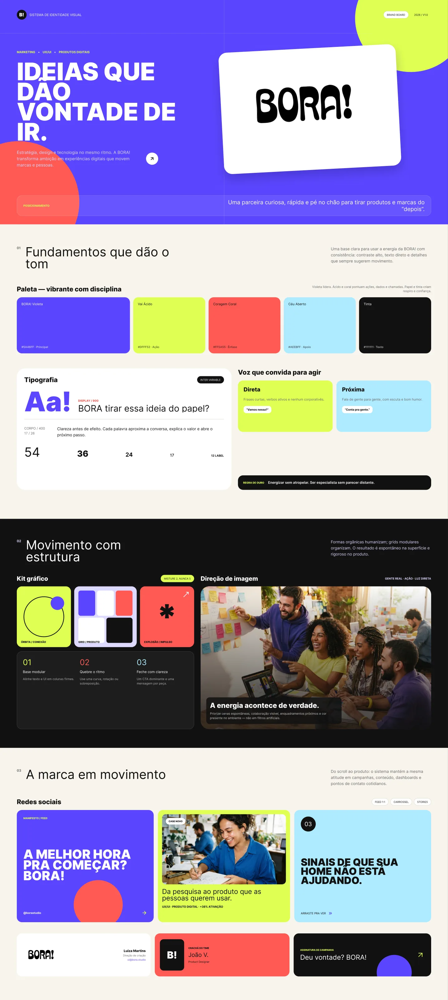
Testei a identidade em seis peças físicas, cada uma com a arte plana em camadas editáveis ao lado do mockup. Assim dá pra ver se ela aguenta tamanhos, materiais e contextos diferentes.
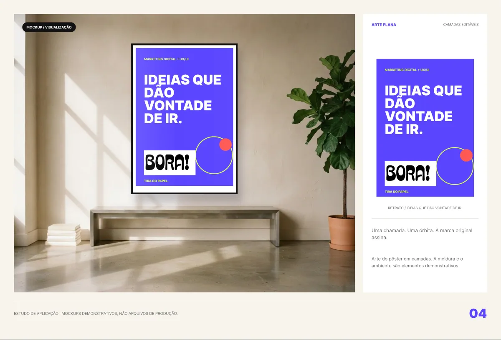
Pôster: uma chamada, uma órbita e a marca assinando.
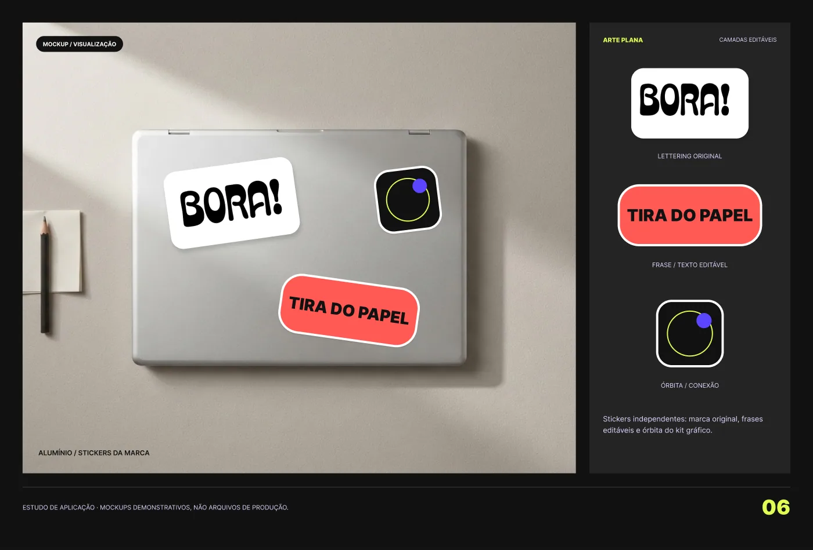
Notebook com o kit de stickers.
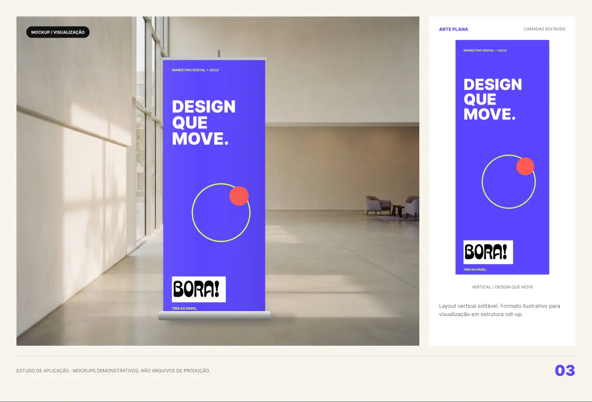
Banner de evento.
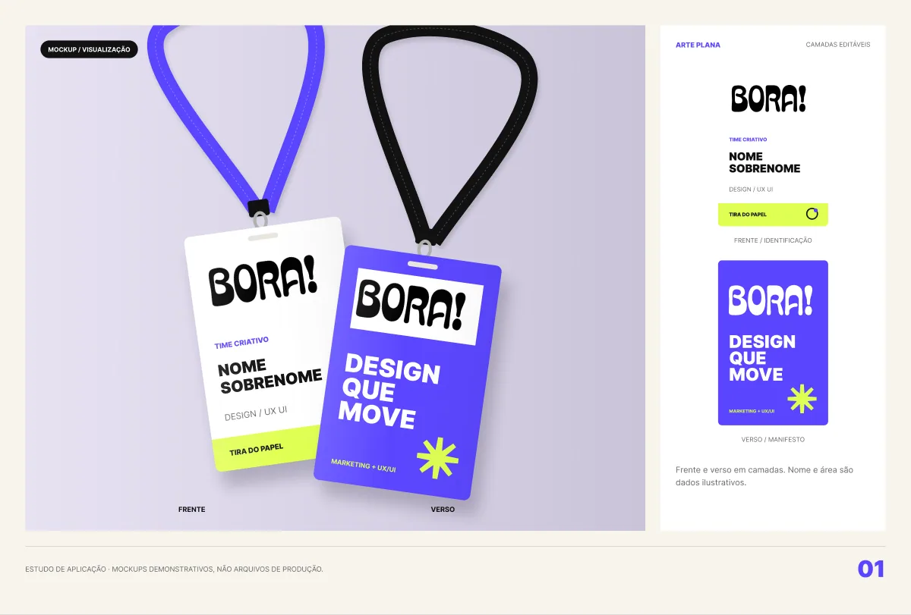
Crachá com cordão.
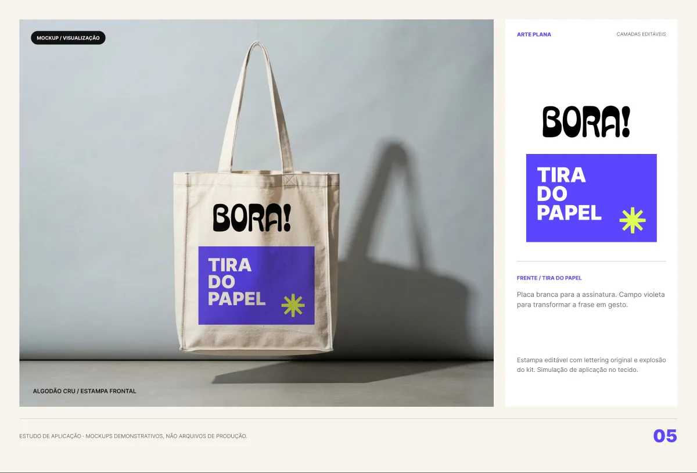
Ecobag.
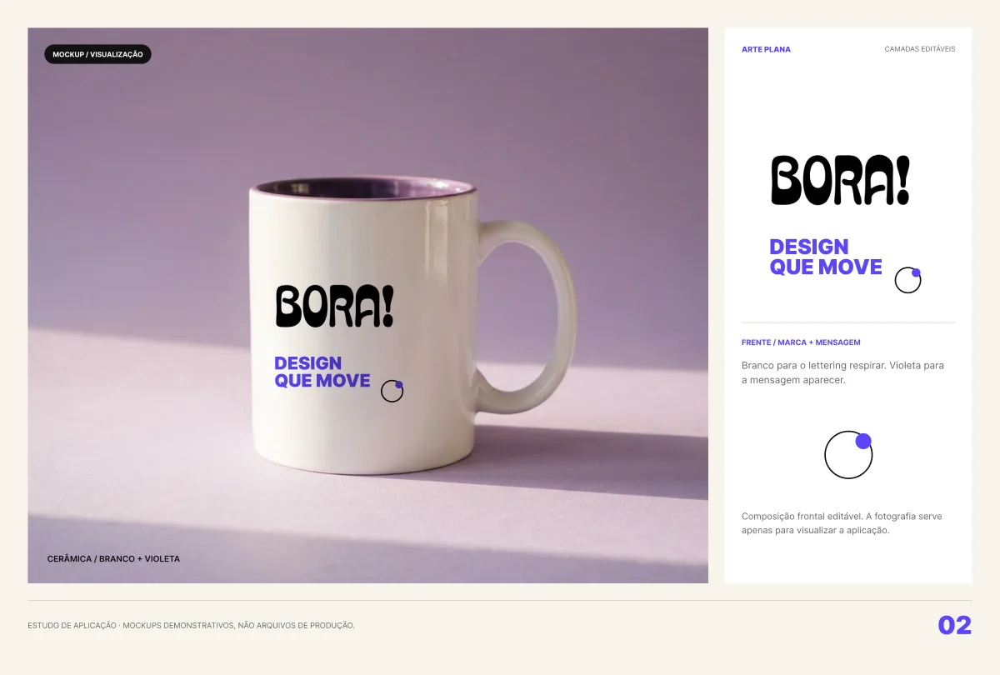
Caneca.
Templates de post, carrossel, story e destaques. Cada formato tem um papel (manifesto, serviço, dica e bastidores), e todos seguem a mesma grade e a mesma hierarquia.
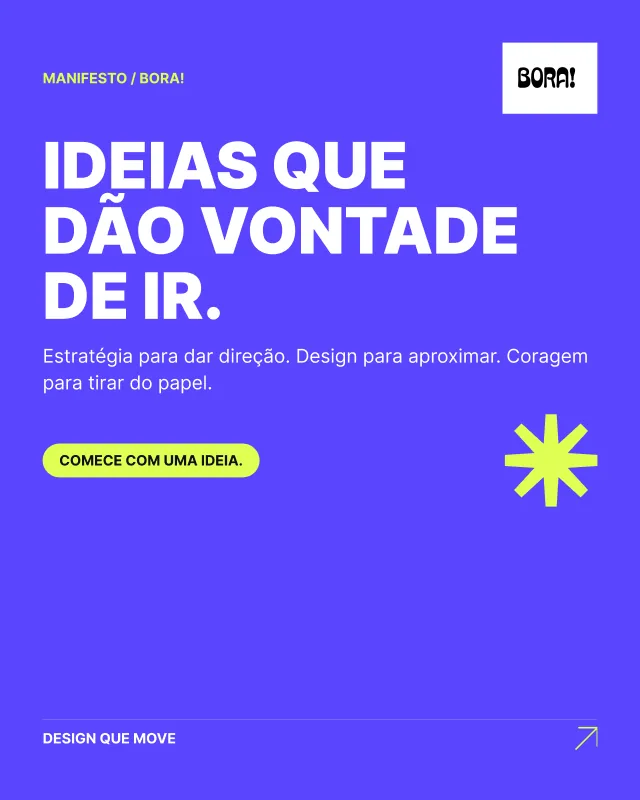
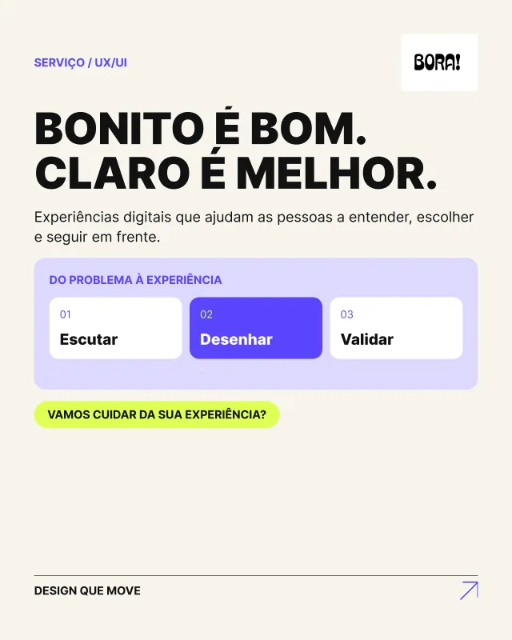
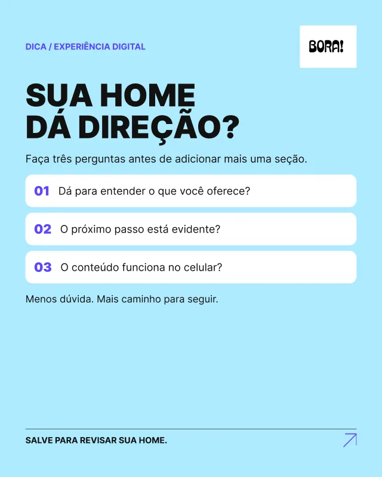
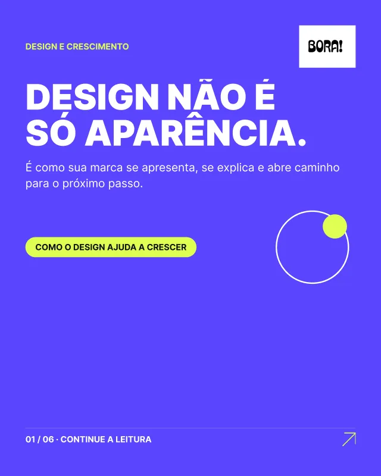
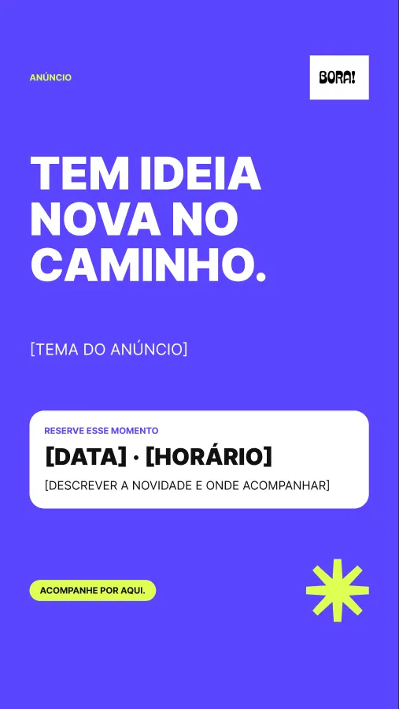
Um deck de 12 slides em duas partes: a apresentação do estúdio (quem é, posicionamento, serviços, processo e um case substituível) e a proposta (objetivos do cliente, escopo, cronograma editável, investimento e próximos passos). É a marca funcionando como ferramenta de venda.
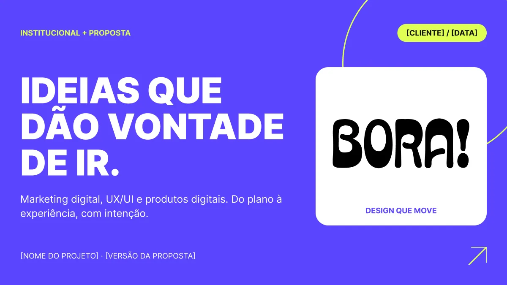
Capa.
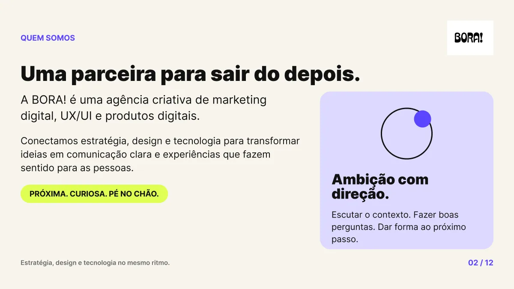
Quem é a BORA!
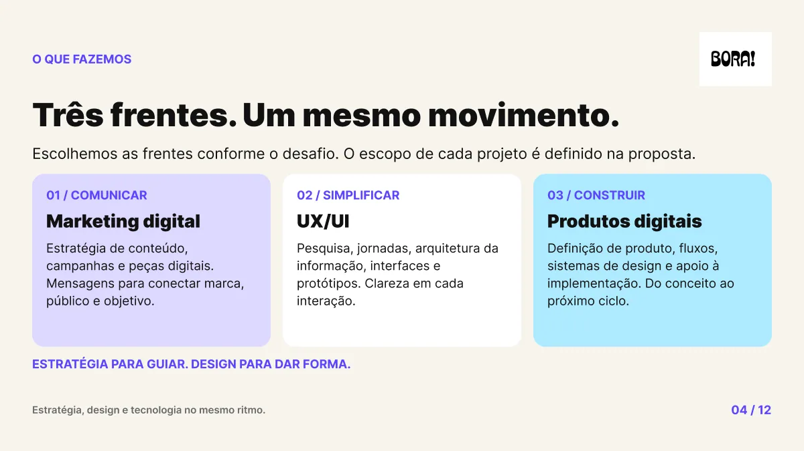
Três frentes: marketing, UX/UI e produto.
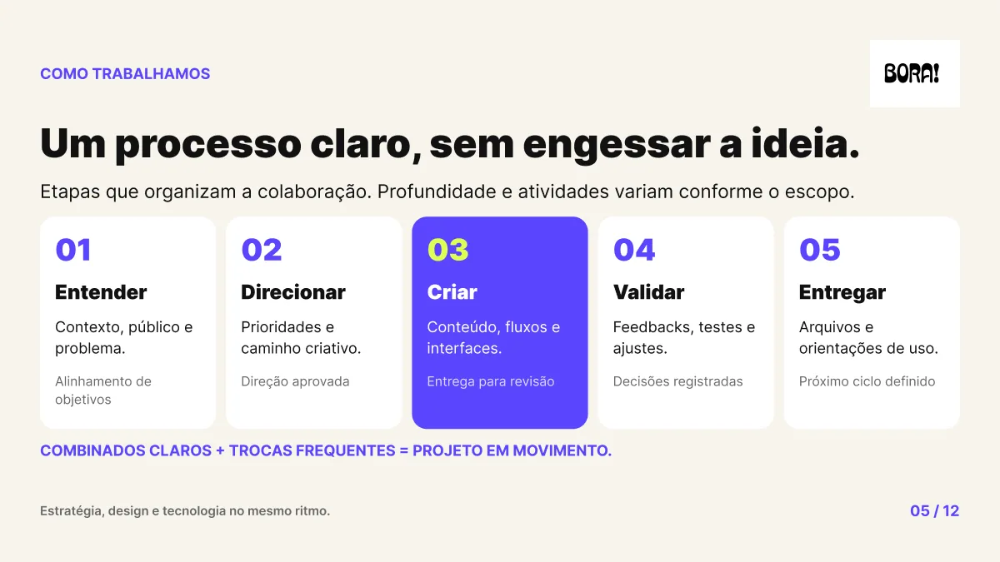
Processo de trabalho.
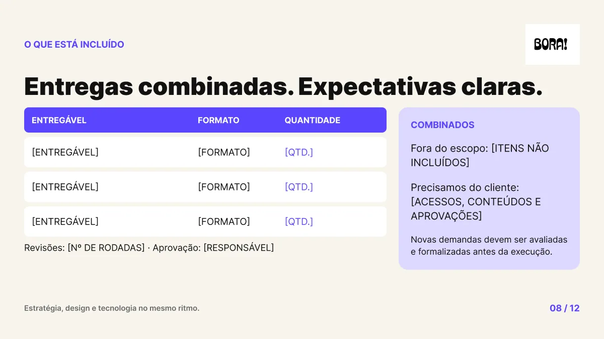
Proposta: escopo e entregáveis.
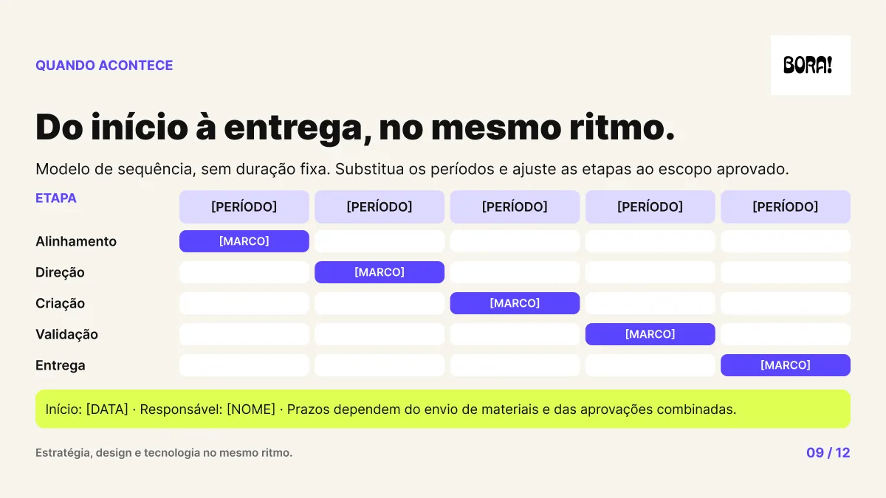
Proposta: cronograma editável.
Cores, tipografia e linguagem gráfica com regras de uso.
Figurinhas, padrões, elementos e checklist de aplicação.
6 mockups: pôster, banner, notebook, crachá, ecobag e caneca.
Posts, carrosséis, stories, destaques e foto de perfil.
Deck comercial de 12 slides com proposta editável.
Site completo: serviços, processo, cases, FAQ e contato.
Sem briefing de ninguém, precisei definir sozinho o que a marca deveria comunicar e criar um design que me representasse de verdade.
Uma ideia só vira marca quando ganha regras: cor com papel definido, tipografia com hierarquia e grids que se repetem.
Aplicar em mockups, posts e apresentação mostrou o que funcionava fora do manual e o que precisava ajustar.
Manual, kit gráfico, mockups, redes sociais, apresentação e landing page, com camadas editáveis.
Próximo projeto
FutureMind →